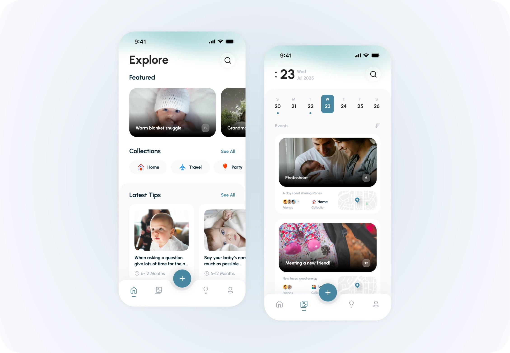
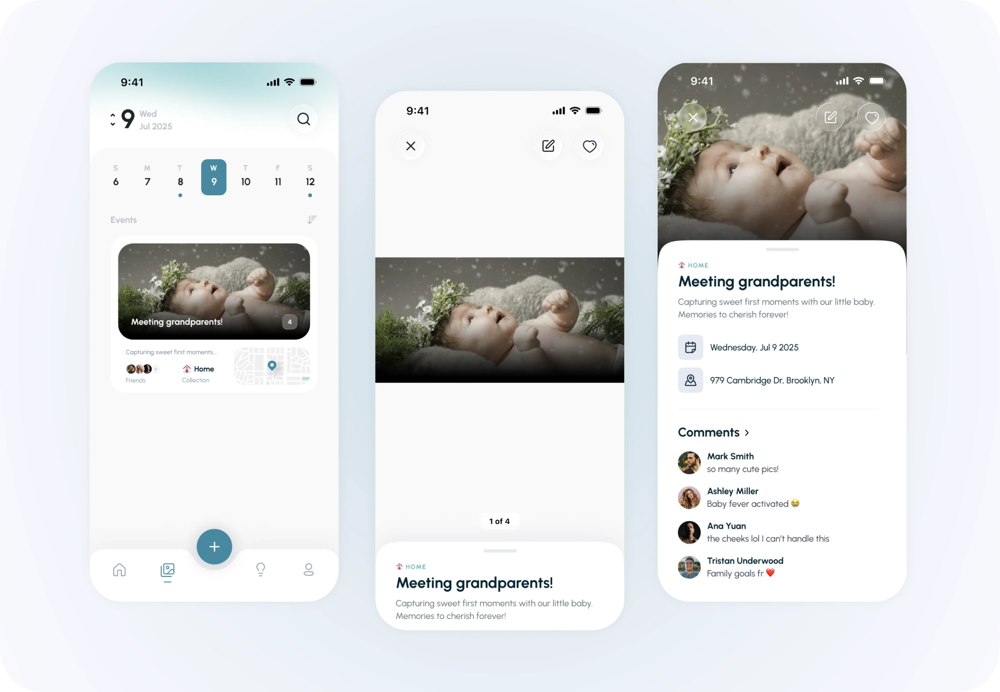
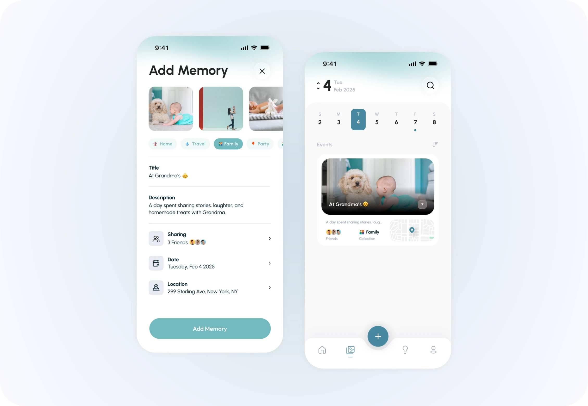
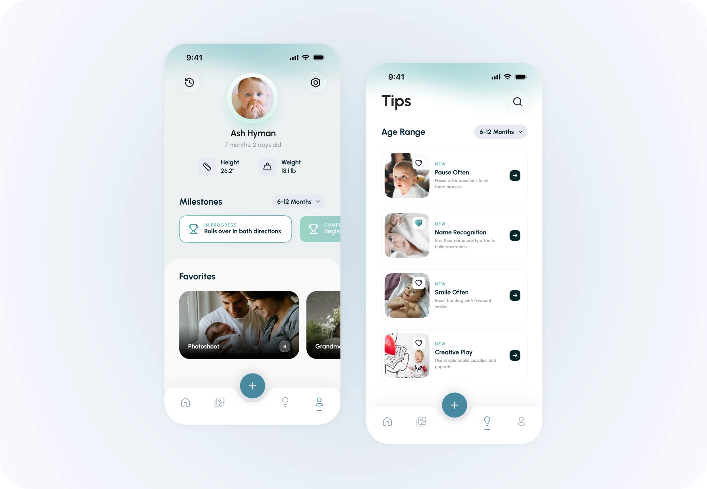

Case Study
Timeline
Inspired by how family vloggers document every moment, I realized that many "firsts" like a child's first word or step often go unrecorded in the average home. To solve this, I created an application that lets parents easily document and store these fleeting milestones while receiving helpful parenting tips along the way. It’s a simple way to build a private, meaningful story that families can cherish now and gift to their children in the future.
User Research
Initial Interviews
How many couples would want to document their child's early years
and growth? These interviews allowed me to gauge the parents this
really could be for, and if I should really be solving this exact
problem.
Here are the main questions I asked:
1. How old are you?
2. Are you married?
3. Do you plan to have kids?
4. Would you like to document your child’s early milestones?
5. What functions of the application would you expect?

User Research
Learnings from Interviews
1. Parents would find value in having a single go-to place to easily store their memories over other social media applications.
2. Most would trust the application to keep their data private.
3. All would like the option to have a private network feature to share specific memories with their families.
4. Most would welcome a feature to celebrate milestones and also have timely parenting tips along the journey.
5. Most of the answers fell into my assumptions while some were out of my expectations. I was really happy about how intuitive and genuine the answers were.
Ideation
Visualizing the Flow
These series of sketches helped identify and generate different ideas, this is just one of my favorite scenes that I sketched.

User Personas
Empathy for
Two Paths
My research identified two core groups: Planned Parents (67%) and Active Parents (33%). While their daily schedules vary wildly, both share the same emotional goal: ensuring no milestone is ever truly "missed" by loved ones. Marketing to these groups requires a balance of "future-proofing" for the planners and "efficiency" for the active parents.
Competitive Analysis
Market Research
After auditing dozens of baby-tracking apps, I realized most parenting apps function merely as photo archives or data logs, lacking integrated guidance. This project bridges that gap, evolving the app from a passive archive into an active partner that offers expert support alongside daily tracking.

Domain Knowledge
Understanding Growth
To make the "Parenting Tips" feature credible, I researched developmental stages to understand which milestones account for the most significant growth. This data ensures the app provides accurate, age-appropriate guidance.

Problem Diagnosis
A Newborn Confidence
After synthesizing my research, I realized that storage isn't the real problem—structure is. Most apps lack the framework to help parents celebrate milestones while simultaneously reducing the stress of child-rearing through useful information.
Information Architecture
Synthesizing Problem Spaces
I mapped out a new architecture to solve the core issues identified by my users. This structural exercise ensured the final product would satisfy the needs of all stakeholders—from tech-savvy parents to less-digital grandparents.

Solution
The Four Pillars

Iteration
Refining the UX
I tested mid-fidelity prototypes to observe user interaction. Based on direct feedback, I addressed three critical friction points:
Navigation: Simplified the calendar by separating Year and Month views.
Context: Added metadata (dates/photo counts) to memory tiles for better organization.
Focus: Streamlined the bottom navigation to 3 core elements, moving less-frequent tasks to the top.

Concept Testing
Finding Problem Spaces
After going through creating the mid-fidelity prototypes, I wanted to test it with users so I can receive feedback, understand better how they interact with the UX and test out the app's features. Based on the testing and feedback, I defined problem areas and action items for improvement.

Explore & Social Sharing
The Explore page offers curated event suggestions, collections, and tips. Beyond personal archiving, friends and family can view curated moments and leave comments, ensuring everyone stays up to date with the child's journey.


Adding Memories
It's really simple. Just select the photos to add - then click and edit each field with whatever information your heart desires.

Profile & Smart Tips
The Profile tracks age, height, and milestones in one place. To support the parent, Smart Tips update dynamically based on the child’s age, offering guidance for every stage of the journey.
